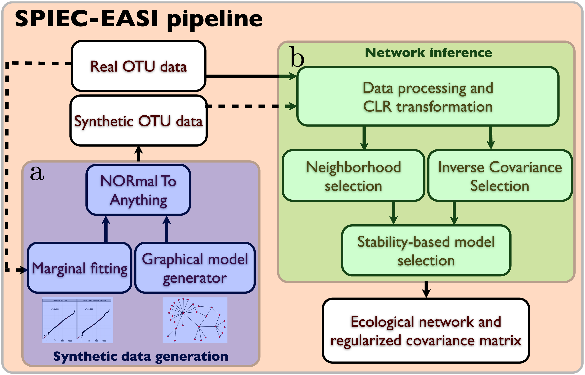
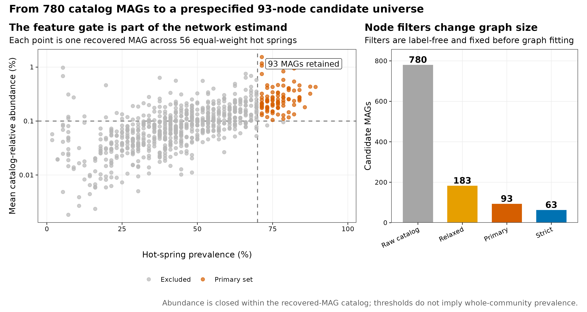
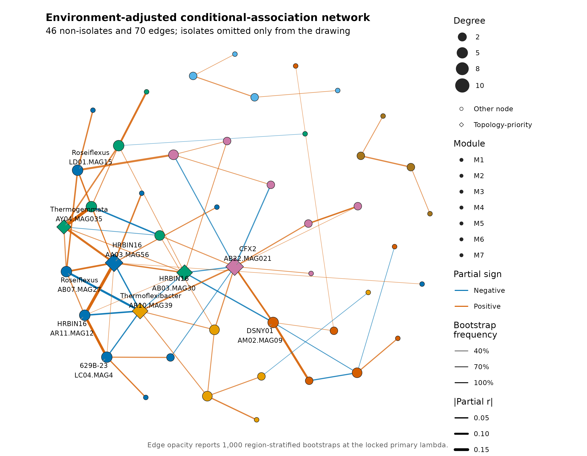
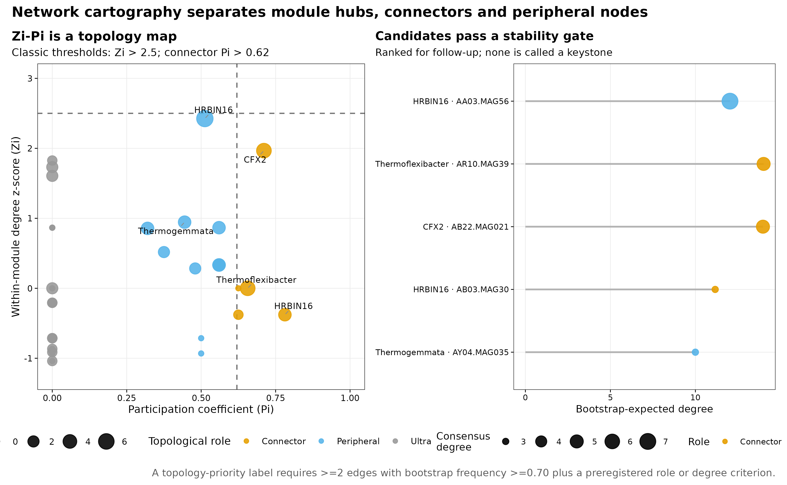
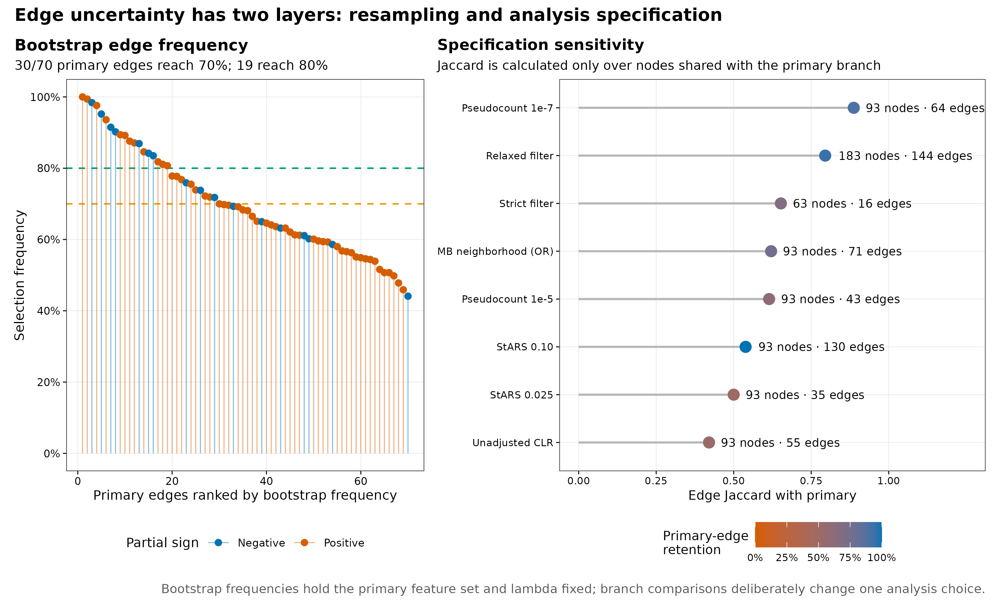
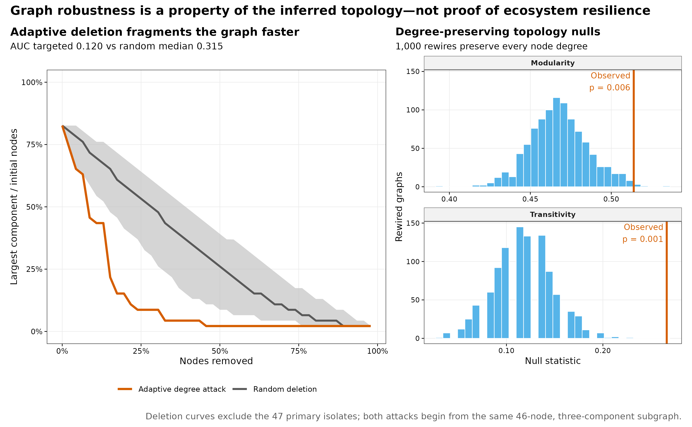

options(timeout = 600)
base_url <- "https://raw.githubusercontent.com/petemeng/metagenomics-best-practices/e219a2cd01609cc208a89e291cbd363ed7f2fbd8/"
files <- read.delim(paste0(base_url, "examples/29/files.tsv"))
for (i in seq_len(nrow(files))) {
path <- files$path[i]
dir.create(dirname(path), recursive = TRUE, showWarnings = FALSE)
if (!file.exists(path)) {
download.file(paste0(base_url, files$source[i]), path, mode = "wb")
}
}共现网络 + 网络进阶（鲁棒性 / keystone / Zi-Pi）
学习目标：把“共现网络”升级成一套可审计的条件关联分析：先固定独立单位与节点过滤，再处理 compositionality 和 habitat filtering，用稀疏图模型选择边，分别量化 resampling uncertainty 与 specification uncertainty；最后用 Zi-Pi、度保持零模型和删点曲线描述拓扑，但不把中心节点直接命名为生态 keystone。
真实数据：Korchagina 等公开的美国西部温泉调查，共 500 个 shotgun metagenomes、56 个 hot springs 和 780 个 recovered MAGs，固定到 Figshare 30284068 v2 (Korchagina 等 2026年; Louca 2026年)。
推断边界：MAG abundance 只在 recovered-genome catalog 内闭合，样本平均 recruitment 约 13%；网络来自横断面 observational data，边没有方向，也不等于直接、因果或已验证的生态互作。
网络里的连线，究竟支持什么关系？
Kurtz 等的 SPIEC-EASI Figure 2b 把网络推断拆成三步：先对 compositional table 做 centered log-ratio（CLR）处理，再选择 neighborhood selection 或 inverse-covariance selection，最后用 StARS 从 regularization path 中选一个稀疏、较稳定的图 (Kurtz 等 2015年)。

本文复现的是 Figure 2b 的 glasso branch，不是作者 American Gut 网络的数值：输入换成真实温泉 MAG 谱；在 CLR 后增加 region、temperature 和 pH 的线性残差化；用 huge 1.5.1 显式执行 graphical lasso 与 StARS；再加入 1,000 次 bootstrap、分析分支、Zi-Pi、degree-preserving null 和 deletion robustness (Zhao 等 2012年)。因此 Methods 应写“CLR + graphical lasso + StARS implemented with huge”，不能写成调用了 SpiecEasi::spiec.easi()。

下载本例数据与分析代码
数据与代码清单列出了本例的输入表、分析脚本和环境文件（约 1.1 MiB）。本清单不含原始 FASTQ 或大型数据库；是否需要它们取决于下文的分析起点。清单中的已计算结果仅供核对；读取结果表不等于重新运行统计模型或上游工具。
在新建文件夹中运行下面的 R 代码，下载完成后即可按正文中的相对路径读取文件。需要核验文件版本时，可使用带完整性检查的下载脚本。
result_dir29 <- "results/29-network"
input_dir29 <- "data/small/29-network"
if (!dir.exists(result_dir29)) result_dir29 <- "../results/29-network"
if (!dir.exists(input_dir29)) input_dir29 <- "../data/small/29-network"
read_tsv29 <- function(directory, name) {
utils::read.delim(
file.path(directory, name), check.names = FALSE,
quote = "", comment.char = "", stringsAsFactors = FALSE
)
}
network_summary29 <- read_tsv29(result_dir29, "primary-network-summary.tsv")
primary_edges29 <- read_tsv29(result_dir29, "primary-edges.tsv")
node_roles29 <- read_tsv29(result_dir29, "node-roles.tsv")
candidates29 <- read_tsv29(result_dir29, "topology-candidates.tsv")
sensitivity29 <- read_tsv29(result_dir29, "network-sensitivity.tsv")
null_summary29 <- read_tsv29(result_dir29, "degree-preserving-null-summary.tsv")
robustness29 <- read_tsv29(result_dir29, "deletion-robustness-summary.tsv")
filter_audit29 <- read_tsv29(input_dir29, "feature-filter-audit.tsv")
stopifnot(
network_summary29$Springs == 56L,
network_summary29$CandidateMAGs == 93L,
network_summary29$Edges == 70L,
nrow(primary_edges29) == 70L,
nrow(node_roles29) == 46L,
nrow(candidates29) == 5L,
nrow(sensitivity29) == 9L
)
fmt29 <- function(x, digits = 3L) {
formatC(x, format = "f", digits = digits)
}
branch29 <- function(name, column, digits = 3L) {
value <- sensitivity29[[column]][sensitivity29$Branch == name]
if (is.numeric(value)) fmt29(value, digits) else value
}
提示先确定这一点
条件关联不是直接互作；网络结构、边稳定性与节点删除结果都要同适当零模型比较。
先锁定输入、版本和算力边界
环境配置与完整运行说明
资源门槛
| Stage | CPU | RAM | Disk | Time |
|---|---|---|---|---|
| Input checksum + 93-feature primary StARS | 1 process | recommend 2–4 GB | <100 MB | about 40 s |
| 1,000 stratified bootstraps + topology null + deletion | 1 process | 2–4 GB | <200 MB | about 40 s |
| Eight sensitivity branches | 1 process | 2–4 GB | <500 MB | about 6 min |
| Five PDF/PNG/350-dpi TIFF redraws | 1 process | included above | about 5 MB | <1 min |
| Render from validated tables | 1 | <2 GB | about 1 MB | seconds |
普通电脑可以直接读取 Git 内约 0.3 MB 的冻结表与已验证结果。最慢的是 relaxed-filter 的 183-node StARS 分支，因为候选 node pairs 从 4,278 增至 16,653；它是必要的 specification audit，不应用降低节点数来换取更好看的稳定性。
固定 R 环境
if (!requireNamespace("renv", quietly = TRUE)) install.packages("renv")
renv::restore(lockfile = "env/network-renv.lock")
# 不使用 renv 时，至少固定直接依赖：
install.packages(c(
"huge", "igraph", "ggplot2", "patchwork",
"ggrepel", "scales", "jsonlite", "digest", "knitr"
))
stopifnot(
packageVersion("huge") == "1.5.1",
packageVersion("igraph") == "2.1.2",
packageVersion("ggplot2") == "3.5.2"
)env/network-renv.lock 固定 41 条直接与传递依赖记录，SHA-256 为 3120e26a05160f296a376d0a8084b725af9463d44b7104af9f4d2cc5b7dcb7de。它只服务本篇网络分析，不改写其他章节已经冻结的 R 环境。
数据来源、保存与 checksum
本文直接从 data/small/29-network/spring-mag-relative-abundance.tsv.gz 和 spring-metadata.tsv 起步。前者由 Figshare 30284068 v2 的 500 × 780 MAG BIOM 表生成：先转换为 sample-relative fraction，再在每个 spring 内等权求均，最后重新闭合；生成脚本、source hash、feature-filter-audit.tsv 和 analysis-contract.tsv 均随表保存。
如需从公开 payload 重建，先下载并验证三份源文件：
mkdir -p data/raw/article29
curl -fL -C - --retry 8 --retry-all-errors \
-o data/raw/article29/hot-spring-mag-table.biom \
https://ndownloader.figshare.com/files/61153444
curl -fL -C - --retry 8 --retry-all-errors \
-o data/raw/article29/hot-spring-sample-metadata.tsv \
https://ndownloader.figshare.com/files/61153429
curl -fL -C - --retry 8 --retry-all-errors \
-o data/raw/article29/hot-spring-recruitment.tsv \
https://ndownloader.figshare.com/files/61153471Figshare 公布的 MD5 分别为 0c1762f31a5c4473dec78571a7b74287、402095b04e2c5518cbec462f41528d4f、51288407e9927f23a25b210edcda7b47。仓库重建先用 prepare_article22_diversity_data.R 将 BIOM 固化为 sample table，再用 prepare_article23_ordination_data.R 生成 56 个 spring profiles；第 29 篇只复制两个锁定产物并生成自己的 lineage card：
Rscript scripts/prepare_article29_network_data.R \
--source-dir data/small/23-ordination-permanova \
--output-dir data/small/29-network \
--notice data/small/29-data-NOTICE.txt
(cd data/small/29-network && sha256sum -c file-checksums.sha256)
Rscript scripts/validate_article29_network.R \
--project-root . \
--input-dir data/small/29-network \
--output-dir results/29-network \
--figure-dir figures \
--chapter chapters/29-cooccurrence-network.qmd随机状态与内联作图函数
library(huge)
library(igraph)
library(ggplot2)
library(patchwork)
library(ggrepel)
RNGkind("Mersenne-Twister", "Inversion", "Rejection")
set.seed(20260729)
pal_pub <- c(
blue = "#0072B2", orange = "#D55E00",
green = "#009E73", purple = "#CC79A7",
gold = "#E69F00", sky = "#56B4E9",
brown = "#A6761D", grey = "#777777"
)
scale_color_pub <- function(...) {
scale_color_manual(values = pal_pub, ...)
}
scale_fill_pub <- function(...) {
scale_fill_manual(values = pal_pub, ...)
}
theme_pub <- function(base_size = 10) {
theme_bw(base_size = base_size, base_family = "sans") +
theme(
panel.grid.minor = element_blank(),
panel.grid.major = element_line(color = "grey92", linewidth = 0.25),
axis.text = element_text(color = "black"),
axis.ticks = element_line(color = "black", linewidth = 0.3),
legend.key = element_blank(),
plot.title.position = "plot",
plot.title = element_text(face = "bold")
)
}
save_pub <- function(plot, file_base, width = 210, height = 140, dpi = 350) {
ggsave(paste0(file_base, ".pdf"), plot, width = width, height = height,
units = "mm", device = cairo_pdf, bg = "white")
ggsave(paste0(file_base, ".png"), plot, width = width, height = height,
units = "mm", dpi = dpi, bg = "white")
ggsave(paste0(file_base, ".tiff"), plot, width = width, height = height,
units = "mm", dpi = dpi, compression = "lzw", bg = "white")
invisible(plot)
}读表、对齐 56 个推断单位并展示结构
profile29 <- read.delim(
gzfile(file.path(input_dir29, "spring-mag-relative-abundance.tsv.gz")),
check.names = FALSE, quote = "", comment.char = ""
)
metadata29 <- read.delim(
file.path(input_dir29, "spring-metadata.tsv"),
check.names = FALSE, quote = "", comment.char = ""
)
spring_ids29 <- names(profile29)[-(1:2)]
mag29 <- t(as.matrix(profile29[, spring_ids29, drop = FALSE]))
storage.mode(mag29) <- "double"
rownames(mag29) <- spring_ids29
colnames(mag29) <- profile29$MAG
metadata29 <- metadata29[match(rownames(mag29), metadata29$Spring), ]
metadata29$BroadRegion <- factor(metadata29$BroadRegion)
stopifnot(
identical(dim(mag29), c(56L, 780L)),
identical(rownames(mag29), metadata29$Spring),
!anyDuplicated(colnames(mag29)),
all(is.finite(mag29)), min(mag29) >= 0,
max(abs(rowSums(mag29) - 1)) < 1e-12,
!anyNA(metadata29[, c(
"BroadRegion", "MedianTemperatureC", "MedianPH"
)])
)
head(metadata29[, c(
"Spring", "BroadRegion", "Samples",
"MedianTemperatureC", "MedianPH", "MeanRecruitment"
)], 6) Spring BroadRegion Samples MedianTemperatureC MedianPH MeanRecruitment
1 AA01 ALV 22 51.70 8.230000 0.1154380
2 AA03 ALV 24 58.65 8.490000 0.1263408
3 AB02 ALV 8 68.50 6.925000 0.0754600
4 AB03 ALV 8 56.05 7.445000 0.1151169
5 AB04 ALV 4 70.60 6.939074 0.1041300
6 AB07 ALV 6 52.50 7.220000 0.1003992Samples 是每个 spring 中被平均的局部 metagenomes 数，不是主模型权重。MeanRecruitment 说明 recovered MAG catalog 覆盖了 reads 的哪一部分；把 catalog-relative abundance 写成“全微生物群绝对丰度”会改变结论对象。
先忠实保留 SPIEC-EASI 的方法问题，再说明实现差异
| Component | Kurtz et al. 2015 | 当前复算 | 解释边界 |
|---|---|---|---|
| Data | American Gut 16S OTUs | Western US hot-spring shotgun MAGs | feature 与生态系统不同 |
| Composition handling | CLR with zero replacement | 93-MAG subcomposition + \(10^{-6}\) + CLR | pseudocount 进入 sensitivity |
| Graph estimator | MB or glasso in SPIEC-EASI | glasso in huge 1.5.1; MB-OR sensitivity |
不宣称调用 SpiecEasi package |
| Sparsity selection | StARS | 30-point path, threshold 0.05, 100 subsamples | 不是 edge-wise FDR |
| Habitat structure | 未作为本文数据的具体合同 | region + temperature + pH residuals | 仅线性 measured adjustment |
| Uncertainty | synthetic benchmark + stability | 1,000 bootstraps + 8 branches + topology null | 无 independent ecosystem replication |
主实现保留“CLR + sparse conditional graph + StARS”这一核心问题，但把每个统计决定显式展开。这样可以核对：到底使用什么 pseudocount、哪些节点、哪个 residual design、哪条 lambda path、哪种 StARS threshold，以及边权来自 precision matrix 的哪个公式。
用 outcome-free 规则锁定节点
相对丰度在 simplex 中，零值处理会进入模型
每个 spring 的 780 个 MAG fraction 和为 1；一个分量升高会机械压低其余分量。直接对 relative abundance 做 Pearson correlation 会产生 closure artifact (Gloor 等 2017年)。主分析先在预选 93 个 MAG 上重新闭合，再加固定 fraction \(10^{-6}\)，随后做
\[ \operatorname{clr}(x_i) =\log(x_i)-\frac{1}{p}\sum_{j=1}^{p}\log(x_j). \]
伪计数不是无害常数：它决定零与低丰度之间的 log-ratio 距离。本文因此预先保留 \(10^{-7}\) 和 \(10^{-5}\) 两个 sensitivity branches。若有 raw counts 与 library size，Bayesian zero replacement、multinomial model 或 SPRING 这类 rank-based method 都值得并列比较 (Yoon 等 2019年)。
prevalence29 <- colMeans(mag29 > 0)
mean_abundance29 <- colMeans(mag29)
keep_primary29 <- prevalence29 >= 0.70 &
mean_abundance29 >= 0.001
keep_relaxed29 <- prevalence29 >= 0.60 &
mean_abundance29 >= 0.001
keep_strict29 <- prevalence29 >= 0.70 &
mean_abundance29 >= 0.002
stopifnot(
sum(keep_primary29) == 93L,
sum(keep_relaxed29) == 183L,
sum(keep_strict29) == 63L
)
mag_primary29 <- mag29[, keep_primary29, drop = FALSE]
head(filter_audit29[filter_audit29$PrimaryFilter, c(
"MAG", "Taxonomy", "NonzeroSprings",
"Prevalence", "MeanRelativeAbundance"
)], 6) MAG
1 AA01.MAG01
4 AA01.MAG10
6 AA01.MAG15
7 AA01.MAG16
9 AA01.MAG18
14 AA01.MAG30
Taxonomy
1 Bacteria;Chloroflexota;Chloroflexia;Chloroflexales;Chloroflexaceae;Chloroflexus;Chloroflexus sp000516515
4 Bacteria;Bipolaricaulota;Bipolaricaulia;RBG-16-55-9;DRXL01;JANXCC01
6 Bacteria;Pseudomonadota;Gammaproteobacteria;Burkholderiales;Thiobacillaceae;JANWZL01
7 Bacteria;Acidobacteriota;Thermoanaerobaculia;Thermoanaerobaculales;Thermoanaerobaculaceae;CALEVZ01
9 Bacteria;Chloroflexota;Chloroflexia;Chloroflexales;Roseiflexaceae;Roseiflexus;Roseiflexus sp000016665
14 Bacteria;Chloroflexota;Anaerolineae;B4-G1;DUEL01;SpSt-77
NonzeroSprings Prevalence MeanRelativeAbundance
1 43 0.7678571 0.001741980
4 40 0.7142857 0.002724672
6 43 0.7678571 0.002530314
7 40 0.7142857 0.001930789
9 41 0.7321429 0.004610133
14 44 0.7857143 0.008333955过滤完全不看环境组或任何 outcome，因此不会因“想保留显著 taxa”而直接泄漏标签；但它仍改变 composition subspace 和候选边集合。主、relaxed、strict 三个网络回答的是相邻但不完全相同的问题。
注意对 500 个局部样本直接建网
同一 spring 的重复不是 500 个独立 ecosystems。若研究问题是跨 springs 的网络，应先在 spring 层聚合或用 multilevel model；若问题是 spring 内空间网络，则需要显式 spatial coordinates 和 within-spring design，不能混成同一个 covariance matrix。
CLR 后残差化已测 habitat structure
\(p>n\) 时，稀疏性是结构假设，不是事实
这里只有 56 个 springs、93 个候选 MAGs；经验 covariance 不可逆。Graphical lasso 求解
\[ \widehat\Theta =\arg\max_{\Theta\succ0} \left\{ \log\det(\Theta)-\operatorname{tr}(S\Theta) -\lambda\lVert\Theta\rVert_1 \right\}, \]
以 \(L_1\) penalty 换取稀疏 precision matrix (Friedman 等 2008年)。较大 \(\lambda\) 产生更少边，较小 \(\lambda\) 产生更密图。StARS 在重复 subsampling 中计算边选择的不稳定度，再选仍满足阈值的最小 regularization (Liu 等 2010年)。它控制的是模型选择稳定性，不是 edge-wise FDR，也不会让每条入选边自动变成“显著”。
habitat filtering 会伪装成共现
温度和 pH 同时筛选多个 MAG 时，它们会随同一环境梯度共变。Berry 与 Widder 的模拟显示，habitat filtering 增强后，共现网络对真实 interaction 的可解释性会显著下降，并可在 hub 周围制造局部伪关联 (Berry 和 Widder 2014年)。主分析因此对每个 CLR feature 拟合：
CLR abundance ~ BroadRegion + z(MedianTemperatureC) + z(MedianPH)随后在 feature-wise residuals 上建网。它只去掉已测协变量的线性、加性部分；非线性温度响应、temperature × pH、微尺度水化学和地理自相关仍可能残留。未校正 CLR 网络必须作为 sensitivity，而不能与主网络混写。
transform_network_data <- function(
x, metadata, pseudocount = 1e-6, adjust = TRUE
) {
x <- sweep(x, 1, rowSums(x), "/")
logged <- log(x + pseudocount)
clr <- logged - rowMeans(logged)
if (adjust) {
design <- model.matrix(
~ BroadRegion +
scale(MedianTemperatureC) +
scale(MedianPH),
data = metadata
)
stopifnot(qr(design)$rank == ncol(design))
clr <- qr.resid(qr(design), clr)
}
transformed <- scale(clr)
stopifnot(
all(is.finite(transformed)),
all(apply(transformed, 2, sd) > 0)
)
transformed
}
z29 <- transform_network_data(
mag_primary29, metadata29,
pseudocount = 1e-6,
adjust = TRUE
)设计矩阵 rank 为 8，因而 residual degrees of freedom 为 56 − 8 = 48。这里做的是 feature-wise linear residualization，不是把 region、temperature 或 pH 节点放进同一 precision matrix；后者会产生 microbe–environment edges，但也需要单独定义变量尺度和缺失机制。
注意把 Spearman |r| > 0.6 当成 interaction network
Pairwise threshold 同时忽略 closure、间接路径、\(p>n\) 和 habitat filtering。若只是 exploratory correlation heatmap，应如实命名 relevance network；若要讨论 conditional association，使用能处理 composition 和高维稀疏性的模型，并给稳定性审计。
用 graphical lasso + StARS 选择主图
pairwise correlation 会把间接路径也画成边
若 A 与 C 都同 B 变化，A–C 可以有很高的 Pearson/Spearman correlation，即使它们之间没有直接关系。Gaussian graphical model 用 precision matrix
\[ \Theta=\Sigma^{-1} \]
编码 conditional dependence：在 multivariate-normal 假设下，\(\Theta_{ij}=0\) 表示给定其余变量后，\(i\) 与 \(j\) 条件独立。非零项可转成 signed partial correlation：
\[ \rho_{ij\mid -ij} =-\frac{\Theta_{ij}}{\sqrt{\Theta_{ii}\Theta_{jj}}}. \]
它比简单 correlation 更接近“不能被其余已测节点线性解释的关联”，但仍不是 biological interaction。遗漏的环境变量、共同底物、空间邻近、测量误差和未纳入 catalog 的生物都能留下边 (Berry 和 Widder 2014年)。
set.seed(20260729)
path29 <- huge::huge(
z29,
method = "glasso",
nlambda = 30,
lambda.min.ratio = 0.05,
scr = FALSE,
verbose = FALSE
)
stars29 <- huge::huge.select(
path29,
criterion = "stars",
stars.thresh = 0.05,
stars.subsample.ratio = 0.80,
rep.num = 100,
verbose = FALSE
)
adjacency29 <- as.matrix(stars29$refit != 0)
adjacency29 <- adjacency29 | t(adjacency29)
diag(adjacency29) <- FALSE
dimnames(adjacency29) <- list(colnames(z29), colnames(z29))
precision29 <- as.matrix(stars29$opt.icov)
partial29 <- -precision29 /
outer(sqrt(diag(precision29)), sqrt(diag(precision29)))
diag(partial29) <- 0
c(
selected_lambda = stars29$opt.lambda,
path_index = stars29$opt.index,
edges = sum(adjacency29[upper.tri(adjacency29)]),
nonisolates = sum(rowSums(adjacency29) > 0)
)100 次 StARS subsampling 选择第 5/30 个 path point，\(\lambda=\) 0.5709，对应 instability 0.0469。93 个候选 MAG 中，46 个进入非孤立子图，47 个在这个 \(\lambda\) 下没有边；共得到 70 条边，其中 53 条正 partial association、17 条负 partial association。

不应为了画面简洁从分析对象中删掉 47 个 isolates：它们是“在当前 filter、covariate、estimator 和 \(\lambda\) 下没有入选边”，而不是“数据中不存在”。图形可以省略 isolates，但结果表必须报告。
注意先看网络，再调 prevalence 和 lambda
节点过滤和 regularization 都会改变 edge universe。为了让某个熟悉物种成为 hub 而改阈值属于结果导向选择。主规则、StARS threshold、pseudocount 和 sensitivity grid 应在拟合前写进 contract。
注意只画非孤立节点，却不报告 isolates
本例 93 个候选节点中有 47 个 isolates。只展示 46-node 图会让读者误以为所有候选 MAG 都参与网络。正文、caption 和 summary table 都应同时给 candidate、non-isolate 和 isolate 数。
1,000 次分区 bootstrap 估边选择频率
region_indices29 <- split(
seq_len(nrow(metadata29)),
metadata29$BroadRegion
)
edge_count29 <- matrix(
0L, ncol(z29), ncol(z29),
dimnames = list(colnames(z29), colnames(z29))
)
set.seed(20260729 + 1000L)
for (b in seq_len(1000L)) {
index <- unlist(lapply(
region_indices29,
function(i) sample(i, length(i), replace = TRUE)
), use.names = FALSE)
z_boot <- transform_network_data(
mag_primary29[index, , drop = FALSE],
metadata29[index, , drop = FALSE],
pseudocount = 1e-6,
adjust = TRUE
)
fit_boot <- huge::huge(
z_boot,
method = "glasso",
lambda = stars29$opt.lambda,
scr = FALSE,
verbose = FALSE
)
a_boot <- as.matrix(fit_boot$path[[1]] != 0)
diag(a_boot) <- FALSE
edge_count29 <- edge_count29 + (a_boot | t(a_boot))
}
edge_frequency29 <- edge_count29 / 1000bootstrap 固定 primary nodes 和 primary \(\lambda\)，只重抽 springs 并重拟合环境残差。70 条主边中，30 条 selection frequency ≥70%，19 条 ≥80%；最低的主边约为 44%。因此图中所有 70 条边都可用于描述 selected graph，但强结论应优先落在高稳定边，并同时报告完整 frequency。
注意把 bootstrap 70% 写成显著性阈值
Selection frequency 依赖固定节点、固定 \(\lambda\)、resampling scheme 和 estimator；它不是 P value，也没有自动控制 FDR。应写“selected in 70% of stratified bootstrap fits”，不要写“显著边”。
Zi-Pi 角色与 topology-priority gate
两类不确定性不能混成一个数
- Resampling uncertainty：固定 93 个节点和主 \(\lambda\)，在每个
BroadRegion内 bootstrap springs，重新做 CLR、协变量残差化与 fixed-\(\lambda\) glasso；统计每条边 1,000 次的 selection frequency。 - Specification uncertainty：改变 pseudocount、环境校正、glasso/MB、feature filter 或 StARS threshold，比较完整 edge set 的 Jaccard similarity。
前者回答“相似的 springs 重抽时这条边还在吗”；后者回答“合理的分析决策改变时整个网络还像不像”。只做其中之一会低估不确定性。
Zi-Pi 是角色坐标，不是 keystone 检验
给定模块划分，节点 \(i\) 的 within-module degree z-score 为
\[ Z_i=\frac{k_{i,s}-\bar{k}_s}{\sigma_{k_s}}, \]
participation coefficient 为
\[ P_i=1-\sum_s\left(\frac{k_{i,s}}{k_i}\right)^2. \]
\(Z_i>2.5\) 常被称为 module hub，\(P_i>0.62\) 的 non-hub 常被称为 connector (Guimerà 和 Nunes Amaral 2005年)。这些阈值描述 link placement；生态 keystone 的核心定义是移除后对 community 产生不成比例的影响。没有 perturbation、纵向动力学或实验验证时，Zi-Pi、高 degree 和高 betweenness 都只能产生候选假说。
g29 <- igraph::graph_from_adjacency_matrix(
adjacency29, mode = "undirected", diag = FALSE
)
g29 <- induced_subgraph(g29, V(g29)[degree(g29) > 0])
set.seed(20260729 + 2000L)
community29 <- cluster_louvain(
g29, weights = rep(1, ecount(g29))
)
module29 <- membership(community29)
within_degree29 <- vapply(V(g29)$name, function(node) {
neighbor_names <- neighbors(g29, node)$name
sum(module29[neighbor_names] == module29[[node]])
}, numeric(1))
zi29 <- ave(
within_degree29,
module29,
FUN = function(x) {
if (length(x) >= 3 && sd(x) > 0) (x - mean(x)) / sd(x) else rep(0, length(x))
}
)
pi29 <- vapply(V(g29)$name, function(node) {
neighbor_modules <- table(module29[neighbors(g29, node)$name])
1 - sum(neighbor_modules^2) / degree(g29, node)^2
}, numeric(1))主图分为 7 个 modules；46 个非孤立节点中有 30 个 ultra-peripheral、11 个 peripheral、5 个 connector，没有节点越过 \(Z_i>2.5\) 的 formal hub threshold。五个 follow-up candidates 均先满足至少两条 bootstrap-frequency ≥70% 的 incident edges，再满足 connector、top-decile degree 或 Zi hub 条件。
candidate_display29 <- candidates29[, c(
"MAG", "Phylum", "Genus", "Module", "Degree",
"StableDegree70", "BootstrapExpectedDegree", "Zi", "Pi", "Role"
)]
candidate_display29$BootstrapExpectedDegree <- round(
candidate_display29$BootstrapExpectedDegree, 2
)
candidate_display29$Zi <- round(candidate_display29$Zi, 2)
candidate_display29$Pi <- round(candidate_display29$Pi, 2)
knitr::kable(
candidate_display29,
caption = "Stability-gated topology-priority candidates; none is labeled an ecological keystone."
)| MAG | Phylum | Genus | Module | Degree | StableDegree70 | BootstrapExpectedDegree | Zi | Pi | Role |
|---|---|---|---|---|---|---|---|---|---|
| AA03.MAG56 | Armatimonadota | HRBIN16 | M1 | 11 | 7 | 12.03 | 2.43 | 0.51 | Peripheral |
| AR10.MAG39 | Bacteroidota | Thermoflexibacter | M5 | 8 | 5 | 14.01 | 0.00 | 0.66 | Connector |
| AB22.MAG021 | Chloroflexota | CFX2 | M4 | 11 | 5 | 13.97 | 1.97 | 0.71 | Connector |
| AB03.MAG30 | Armatimonadota | HRBIN16 | M3 | 8 | 3 | 11.16 | -0.38 | 0.78 | Connector |
| AY04.MAG035 | Planctomycetota | Thermogemmata | M3 | 6 | 3 | 10.00 | 0.94 | 0.44 | Peripheral |
AA03.MAG56（HRBIN16）degree 最高且有 7 条 consensus incident edges，但 \(Z_i=2.43\)，仍低于 hub threshold；AR10.MAG39、AB22.MAG021 与 AB03.MAG30 的 \(P_i>0.62\)，属于 connector。这里最重要的结果不是“找到了五个 keystones”，而是 没有任何 MAG 能凭当前网络获得 keystone 结论。

升级 3：没有 Zi hub 是可报告结果
最高 Zi 为 2.43，低于 2.5；因此不应移动阈值直到出现“hub”。本文的五个 topology-priority candidates 来自预定义的 stability + connector/top-degree gate，它们适合决定下一步做谁的培养、co-culture、metatranscriptomics、spatial co-localization 或 targeted perturbation，不适合直接写“keystone species”。
注意把 degree、betweenness 或 Zi-Pi 当 keystone 证明
拓扑中心性只描述 selected graph。Keystone 要求 removal 后出现不成比例的 community effect；至少需要 perturbation、time series、absolute abundance 或机制实验。本文只使用 topology-priority candidate 这一表述。
specification sensitivity：不要只挑最像主图的分支
sensitivity_display29 <- sensitivity29[, c(
"Branch", "Features", "Edges", "Nonisolates",
"EdgeJaccardWithPrimary", "PrimaryEdgeRetention"
)]
sensitivity_display29$EdgeJaccardWithPrimary <- round(
sensitivity_display29$EdgeJaccardWithPrimary, 3
)
sensitivity_display29$PrimaryEdgeRetention <- round(
sensitivity_display29$PrimaryEdgeRetention, 3
)
knitr::kable(
sensitivity_display29,
caption = "Prespecified network branches; Jaccard uses only nodes shared with the primary graph."
)| Branch | Features | Edges | Nonisolates | EdgeJaccardWithPrimary | PrimaryEdgeRetention |
|---|---|---|---|---|---|
| Primary | 93 | 70 | 46 | 1.000 | 1.000 |
| Pseudocount 1e-7 | 93 | 64 | 41 | 0.887 | 0.900 |
| Pseudocount 1e-5 | 93 | 43 | 32 | 0.614 | 0.614 |
| Unadjusted CLR | 93 | 55 | 37 | 0.420 | 0.529 |
| MB neighborhood (OR) | 93 | 71 | 61 | 0.621 | 0.771 |
| Relaxed filter | 183 | 144 | 94 | 0.795 | 0.943 |
| Strict filter | 63 | 16 | 19 | 0.652 | 0.682 |
| StARS 0.025 | 93 | 35 | 29 | 0.500 | 0.500 |
| StARS 0.10 | 93 | 130 | 61 | 0.538 | 1.000 |
改变伪计数到 \(10^{-7}\) 时，edge Jaccard 仍为 0.887；增至 \(10^{-5}\) 后降到 0.614。取消环境校正仅保留主边的 52.9%，Jaccard 为 0.420，说明 habitat structure 对网络定义有实质影响。MB-OR 与 glasso Jaccard 为 0.621；StARS threshold 从 0.025 放宽到 0.10 时，边数由 35 增至 130。

升级 1：把 edge stability 和 edge significance 分开
30/70 条边达到 bootstrap frequency 70%，19/70 达到 80%。这些阈值是预定义的审计标签，不是 \(q<0.05\)。若论文需要正式 edge-wise error control，应选能定义 null distribution/FDR 的方法，或在完全独立数据集上锁定节点和参数后验证；不能把 selection frequency 偷换成 P value。
升级 2：环境校正是主分析，但 raw network 仍需展示
Unadjusted CLR 与主图 edge Jaccard 只有 0.420。这不是“校正后更正确”的自动证明，而是结果对 habitat structure 敏感的证据。更完整的升级包括 spline temperature、temperature × pH、conductivity complete-case、geographic eigenvectors 或 spatial model；所有新增项都应先于看图锁定，并报告 lost degrees of freedom。
升级 4：正负号不能直接翻译成合作与竞争
正 partial association 可能来自共同资源或相似 niche，负值可能来自相反 habitat preference、replacement artifact 或 compositional competition。要支持 cooperation/competition，至少应补充 absolute abundance、time-lag、metabolic complementarity、培养或扰动证据；有 direction 的 ecological model 也必须明确时间尺度和 process assumptions。
注意把正边叫互利、负边叫竞争
边的 sign 是 CLR residual partial association。共同 habitat、底物、捕食者、遗漏节点和零值处理都能产生相同 sign。生态机制必须靠独立 evidence layer 支持。
topology null 与 deletion robustness
robustness 和 null model 也只在图层面成立
删点曲线把 inferred graph 中的节点按 adaptive degree 或 random order 删除，再追踪 largest connected component（LCC）。度保持 rewiring 则保留每个节点的 degree，建立 modularity 和 transitivity 的 topology reference。这两种分析都在“已推断的边是真的且静态”这一条件下工作；它们衡量 graph fragmentation，不等于真实生态系统的 resistance、resilience 或 functional redundancy。
重要先锁单位，再锁节点，再估边
500 个局部 metagenomes 来自 56 个 springs，每个 spring 有 1–33 个样本。若直接把 500 行当独立重复，样本最多的 spring 会主导 covariance，且同一 spring 内的空间相关被当成额外证据。主分析先对每个 spring 的 sample-relative profiles 等权求均并闭合，56 个 springs 各占一个单位。
set.seed(20260729 + 10000L)
null_stats29 <- replicate(1000L, {
g_null <- rewire(
g29,
with = keeping_degseq(
niter = 20 * ecount(g29), loops = FALSE
)
)
set.seed(sample.int(.Machine$integer.max, 1))
c(
modularity = modularity(
cluster_louvain(g_null, weights = rep(1, ecount(g_null)))
),
transitivity = transitivity(g_null, type = "global")
)
})
# Adaptive attack 每一步重新计算 degree；random attack 重复 1,000 个顺序。
# LCC 始终除以最初的 46 个 non-isolate nodes，而不是当前剩余节点数。Observed modularity 为 0.514，度保持 null 的 upper-tail empirical \(p=\) 0.006；observed transitivity 为 0.266，相应 \(p=\) 0.001。这说明当前图比相同 degree sequence 的随机 rewires 更模块化、三角闭合更多；它不证明 modules 对应代谢 guild。
46-node 非孤立子图一开始已分成 3 个 components，LCC 为 38。Adaptive-degree deletion 的 normalized LCC AUC 为 0.120，1,000 个 random orders 的 median 为 0.315（95% reference interval 0.235–0.385）。中心节点删除确实更快打碎 这张图，但未测量微生物丰度恢复、功能补偿或生态稳态。

升级 5：模块与鲁棒性要有 reference distribution
只报告 modularity 0.514 不知道它是否超出 degree sequence 自带的结构。度保持 null 显示 observed modularity 和 transitivity 都落在上尾，但 null 仍没有保存 taxonomy、geography、edge signs 或 measurement uncertainty。删除曲线也条件于 selected graph；不能将 targeted AUC 0.120 写成“温泉微生物群抗扰动能力低”。
警告删点曲线不是生态恢复曲线
Graph deletion 不模拟 abundance dynamics、功能冗余、物种迁入或 environmental feedback。它可比较 topology 对攻击顺序的敏感度，但不能给 resistance、resilience、collapse threshold 或 intervention efficacy。
报告网络选择、稳定性和零模型
MAG relative-abundance profiles were obtained from 500 shotgun metagenomes collected across 56 western US hot springs (Figshare record 30284068 v2; Korchagina et al., 2026). Sample-relative profiles were averaged with equal weight within each hot spring and reclosed, making the hot spring the inferential unit. Abundances were interpreted within the 780-recovered-MAG catalog rather than as whole-community fractions. MAGs were retained when their non-zero prevalence was at least 70% across springs and their mean catalog-relative abundance was at least 0.1%, yielding 93 candidate nodes. The retained subcomposition was reclosed; a fixed fraction of \(10^{-6}\) was added before natural-log centered log-ratio transformation. To reduce measured habitat filtering, each CLR feature was residualized against broad region, standardized median temperature and standardized median pH, and residuals were centered and scaled. A sparse inverse-covariance network was estimated by graphical lasso using huge v1.5.1. Thirty regularization values with a minimum lambda ratio of 0.05 were evaluated; the graph was selected by StARS with an instability threshold of 0.05, a subsample ratio of 0.80 and 100 subsamples. Edge weights were signed partial correlations derived from the selected precision matrix. Edge-selection frequencies were estimated using 1,000 broad-region-stratified bootstrap resamples, refitting the transformation, covariate adjustment and graphical lasso at the locked primary lambda. Sensitivity analyses varied the pseudocount, environmental adjustment, graphical-model estimator, feature gate and StARS threshold. Louvain modules and classic unweighted Zi-Pi roles were computed on the non-isolate graph with igraph v2.1.2. Modularity and transitivity were compared with 1,000 degree-preserving rewired graphs. Topological robustness was summarized by the largest-connected-component curve under adaptive highest-degree deletion and 1,000 random deletion orders. All stochastic operations used seed 20260729. Analyses were conducted in R v4.4.1.
Methods 还需列出 source file IDs/checksums、spring 聚合规则、fraction 单位、过滤前后节点数、zero replacement、协变量 design、完整 \(\lambda\) path、StARS 版本与 subsample ratio、bootstrap 分层、edge sign 公式、module algorithm、Zi-Pi 阈值、null rewiring 次数和所有 sensitivity branches。结果中应同时报告 isolates、edge stability 与失败分支，不能只给最终 PNG。
换到自己的研究中，先检查哪些条件？
至少准备三张表：
features × samples的 abundance/count table；feature ID 唯一，并明确是 reads、relative fraction、coverage 还是 copies per mass；- 每个独立单位一行的 metadata，至少含 sample/subject/site/batch，以及要调整的环境或临床变量；
- feature taxonomy/annotation table，用于结果解释，不参与看图后筛边。
然后按研究设计锁定：
- 推断单位。同一受试者、site、household 或 reactor 的重复测量不可默认独立；纵向数据应使用 time-series/dynamic network，而不是把时间点堆进横断面 covariance。
- feature gate。用不看 outcome 的 prevalence/abundance rule，并至少准备一松一严两个分支；节点集合不同的网络只在 shared nodes 上比较 edge Jaccard。
- composition 与 zero policy。relative table 至少用 log-ratio 思路；raw counts 可比较 SPIEC-EASI、SPRING、proportionality 或合适的 count model。伪计数必须写进 Methods。
- confounding contract。预先列出 batch、site、age/diet、temperature/pH 等变量；若同一 covariate 同时决定采样和微生物，考虑 nonlinear/spatial/multilevel model。
- sparsity selection。固定 estimator、lambda grid、StARS threshold/subsample ratio/replicates；样本少时减少节点，不要用更密图掩盖 \(n\) 不足。
- 两层稳定性。做 clustered/stratified bootstrap，并改变合理的分析 specification；独立 cohort/site 的 locked replication 比同一数据重抽更强。
- 候选升级。将 stable edge、module role、MAG metabolism、spatial co-localization、metatranscriptomics、absolute abundance 和 perturbation evidence 合并成证据梯度；只有 removal effect 支持时才使用 keystone。
如果研究目标是 intervention 或 direction，应转向 longitudinal absolute abundance、generalized Lotka–Volterra、dynamic Bayesian network 或 perturbation experiment。横断面条件关联网络适合生成可检验假说，不负责替代机制实验。
图中应该保留哪些信息？
网络图最容易因装饰遮住统计事实。本文固定以下视觉语义：positive partial association 用橙色，negative 用蓝色；edge opacity 映射 bootstrap frequency，width 映射 \(|\rho_{partial}|\)；node fill 只表示 module，菱形只表示 topology-priority。Layout seed 固定为 20260729 + 50,000，不能靠反复刷新挑最像“生物模块”的摆法。
主图标题、坐标、图例、节点标签和注释全部为英文。MAG label 仅给十个预先排序节点，避免 46 个标签互相覆盖；完整 node table 另存。PDF 用作矢量主文件，PNG 用于网页和公众号，350-dpi LZW TIFF 用于投稿。网络原始 edge list、layout coordinates、node roles 和每条边 frequency 都进入结果目录，审稿人无需从图片反推数值。
edge_table <- read.delim("results/29-network/network-edges-layout.tsv")
node_table <- read.delim("results/29-network/network-layout.tsv")
ggplot() +
geom_segment(
data = edge_table,
aes(
x = X, y = Y, xend = Xend, yend = Yend,
color = Sign,
alpha = SelectionFrequency,
linewidth = AbsolutePartialCorrelation
)
) +
geom_point(
data = node_table,
aes(X, Y, fill = Module, size = Degree, shape = TopologyPriority)
) +
scale_color_manual(values = c(
Positive = "#D55E00", Negative = "#0072B2"
)) +
coord_equal() +
labs(
color = "Partial sign",
alpha = "Bootstrap frequency",
linewidth = "|Partial r|",
size = "Degree"
) +
theme_void(base_family = "sans")回到最初的问题
网络图最危险的部分不是线太多，而是把横断面相对丰度中的条件关联直接写成互作。本文以 56 个等权温泉、93 个高频 MAG 为例，完成 CLR、环境残差化、graphical lasso、StARS、1,000 次 bootstrap、Zi-Pi、度保持零模型和删点鲁棒性审计。
参考文献
- Kurtz ZD, Müller CL, Miraldi ER, et al. Sparse and compositionally robust inference of microbial ecological networks. PLOS Computational Biology. 2015;11:e1004226. (Kurtz 等 2015年)
- Liu H, Roeder K, Wasserman L. Stability Approach to Regularization Selection (StARS) for high-dimensional graphical models. NeurIPS. 2010;23:1432–1440. (Liu 等 2010年)
- Friedman J, Hastie T, Tibshirani R. Sparse inverse covariance estimation with the graphical lasso. Biostatistics. 2008;9:432–441. (Friedman 等 2008年)
- Berry D, Widder S. Deciphering microbial interactions and detecting keystone species with co-occurrence networks. Frontiers in Microbiology. 2014;5:219. (Berry 和 Widder 2014年)
- Guimerà R, Nunes Amaral LA. Functional cartography of complex metabolic networks. Nature. 2005;433:895–900. (Guimerà 和 Nunes Amaral 2005年)
- Yoon G, Gaynanova I, Müller CL. Microbial Networks in SPRING. Frontiers in Genetics. 2019;10:516. (Yoon 等 2019年)
- Korchagina A, et al. Genome-resolved metagenomic survey of microbial diversity in hot springs across the western United States. Scientific Data. 2026. (Korchagina 等 2026年)